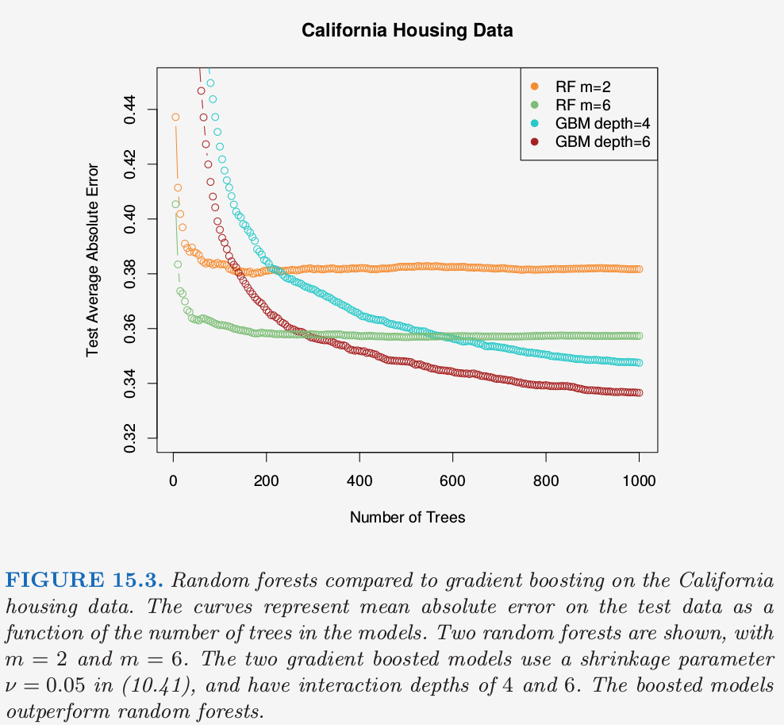
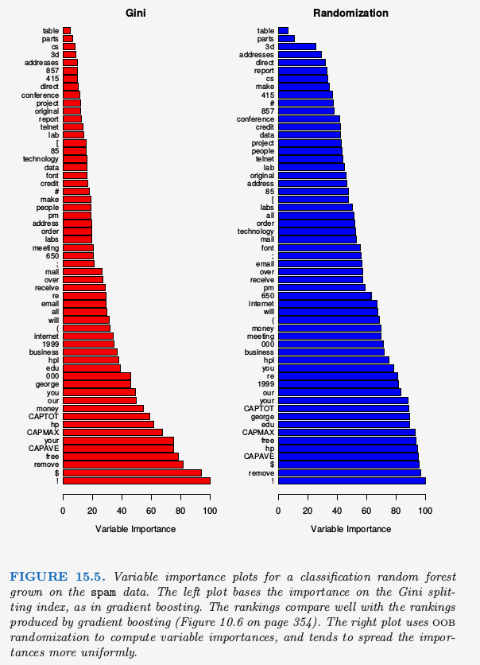
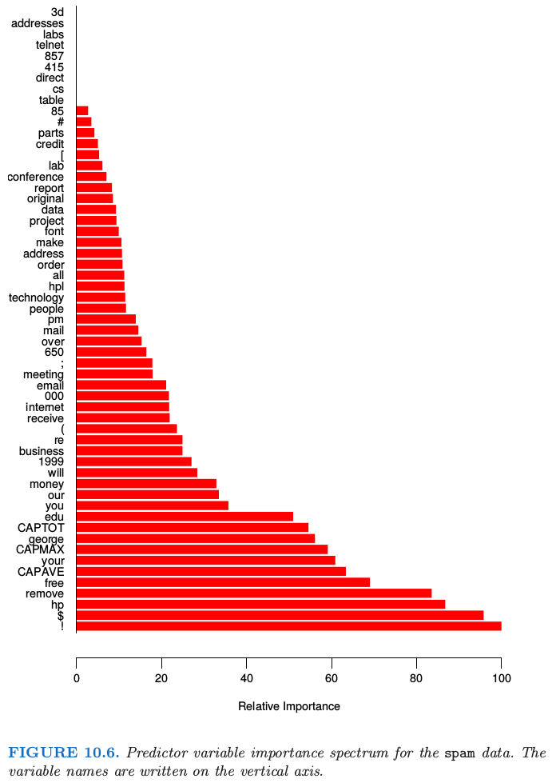
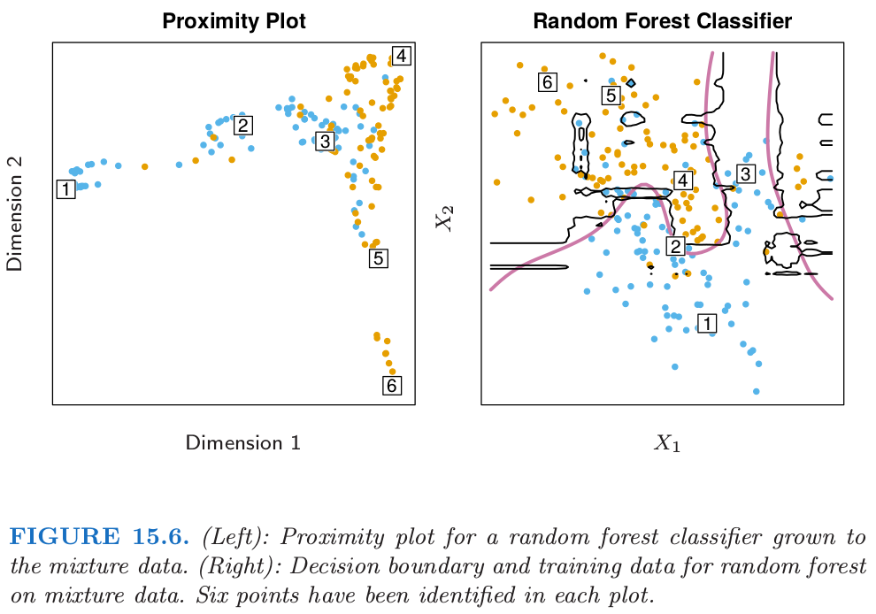
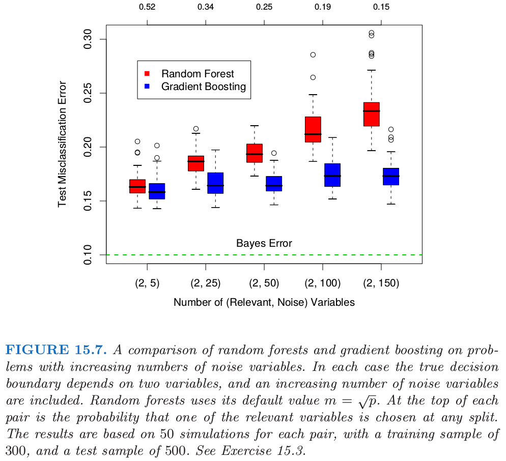

15.3 随机森林的细节
| 原文 | The Elements of Statistical Learning |
|---|---|
| 翻译 | szcf-weiya |
| 时间 | 2018-01-02 |
我们掩盖了对于分类和回归随机森林的区别。当用于分类，随机森林从每棵树中得到类别投票，接着采用多数投票来分类（见8.7节bagging类似的讨论）。当用于回归时，如式(15.2)，在目标点$x$处每棵树的预测被简单地平均。另外，发明者给出下面两条推荐：
- 对于分类，$m$的默认值为$\lfloor \sqrt p \rfloor$，且最小的结点数为1。
- 对于回归，$m$的默认值为$\lfloor p/3\rfloor$，且最小的结点数为5。
实际中这些参数的最优值取决于问题，并且它们应当被视为调整参数(tunning parameters)。在图15.3中，$m=6$比默认值$\lfloor 8/3\rfloor =2$更好。
Recall

集外样本
随机森林一个重要的特征是它对集外(out-of-bag)(OOB)样本的使用：
对于每个观测$z_i=(x_i, y_i)$，通过仅对部分的树平均来构造随机森林预测量，这部分的树是对应那些$z_i$不出现的自助样本。
OOB误差估计几乎等价于通过$N$折交叉验证得到的估计；见练习15.2。因此与许多其它的非线性估计量不同，随机森林可以按序列拟合，同时交叉验证也将沿着这个序列进行。一旦OOB误差稳定，训练可以终止。
图15.4显示了spam数据的OOB误分类误差，与测试误差进行比较。尽管这里平均了2500棵树，从图中可以看出似乎200棵树就足够了。
变量重要性
随机森林的变量重要性图象可以用gradient-boosted模型完全一样的方式来作出（10.13节）。在每个树的每个分割点，分割准则的改进是最重要性度量，而重要性度量归功于分离变量，并且对于每个变量，这种改进在森林中的每棵树中都有积累。图15.5的左图展现了用这种方式计算的spam数据的变量重要度；可以与gradient boosting对应的图10.6进行比较。

Recall

boosting完全忽略了一些变量，而随机森林不会。备选的分离变量选择增加了任意单个变量被包含进随机森林的概率，而boosting中没有这种选择。
随机森林也采用OOB样本来构造不同的变量重要性度量，这显然是用来衡量每个变量的预测强度。当生成$b$棵树，得到OOB样本，预测的准确度被记录。接下来第$j$个变量的值在OOB样本样本中随机排列，并且再一次计算准确度。准确度的降低是这种排列在所有树上进行平均造成的，而且这也用作对随机森林中第$j$个变量的重要性的度量。这些被表示成图15.5右图的最大值的比例。尽管这两种方法的排名类似，但右图中的重要性在变量间更加均匀。随机化有效取消了单个变量的影响，这很像在线性模型中设置对应变量的系数为0（练习15.7）。如果这个变量不可用，这并不能度量该变量对预测的影响，因为如果模型去掉该变量重新拟合，其它的变量可以作为替代品使用。
邻近图
随机森林宣扬的一个输出是邻近图(proximity plot)。图15.6展示了第2章中2.3.3节的混合数据的邻近图。

在生成随机森林时，便会积累训练数据$N\times N$的邻近矩阵。对于每棵树，任意一对OOB观测值共享一个终止结点时其邻近值增加1。这个邻近矩阵接着用高维缩放（14.8节）表示成两维。这个想法是即使数据可能是高维的，其中涉及混合变量等等，但邻近图会给出随机森林分类器中彼此充分靠近的观测的标示。
不管什么数据，随机森林的邻近图经常看起来非常类似，这也让人怀疑其效用。这些图趋向于星形，每个类别一个臂，当分类效果越好，图就会越清楚。
因为混合数据是二维的，我们可以将邻近图中的点映射到原始坐标中，然后更好地理解它们所代表的。似乎在每个类的纯区域中的点映射到星状图的末端，而靠近判别边界的点映射到中心。当我们考虑到邻近矩阵的构造时便会知道这不奇怪。在纯区域中的相邻点经常最终会共享一个“桶(bucket)”，因为当终止结点是纯的，它不在被随机森林的生成树算法而分割。另一方面，属于不同类别的相互靠近的点有时会共享一个终止结点，但不是总是。
随机森林和过拟合
当变量个数很大时，而相关变量很少，$m$较小时的随机森林可能表现很差。在每个分割处，相关变量被选择的概率很小。图15.7展示了支持这个断言的模拟的结果。细节在图题和练习15.3中给出。

在图中的顶部我们可以看到相关变量在随机森林任意分割时被选到的超几何概率（这个模拟中，相关变量个数相同）。
weiya注
按图中一样固定相关变量的个数为2，则概率的具体计算公式如下 其中$n_{noise}$为噪声变量的个数，$m$为随机森林的参数。 比如 更一般地，设$n_1$为相关变量的个数，$n_2$为噪声变量的个数，$m=\lfloor n_1+n_2\rfloor$，则
当概率变小，boosting和随机森林的差别变大。当相关变量个数变多，随机森林的表现在噪声变量增加时出奇地鲁棒。举个例子，当有6个相关变量，100个噪声变量，假设$m=\sqrt{6+100}\approx 10$相关变量在任意分割点被选择到的概率为0.46。根据图15.7，与boosting相比，这不会损害随机森林的表现。这种鲁棒性大部分是因为误分类代价相对于每棵树中概率估计的偏差和方差的不敏感性。我们在下一节考虑用于回归的随机森林。
另外一个断言是随机森林不会过拟合数据。这显然是正确的，因为增大$B$不会使得随机森林序列过拟合；像bagging一样，随机森林估计式(15.2)在$\Theta$的$B$个实现中取平均，这是对下面期望的近似
这里$\Theta$的分布是在训练数据的条件上的。然而，这个极限可以过拟合数据；充分生长的树的平均可以导致模型太丰富(too rich)，并且产生额外的方差。Segal (2004)1证明了通过控制随机森林中单个生成树的深度来获得效果的小改善。我们的经验是采用充分生长的模型很少要付出太大代价，并且会少一个调整参数。
图15.8显示了在一个简单的回归例子中控制深度对模型的影响。分类器对方差不够敏感，很少在随机森林的分类中看到过拟合的影响。

-
Segal, M. (2004). Machine learning benchmarks and random forest regression, Technical report, eScholarship Repository, University of California. http://repositories.edlib.org/cbmb/bench rf regn . ↩